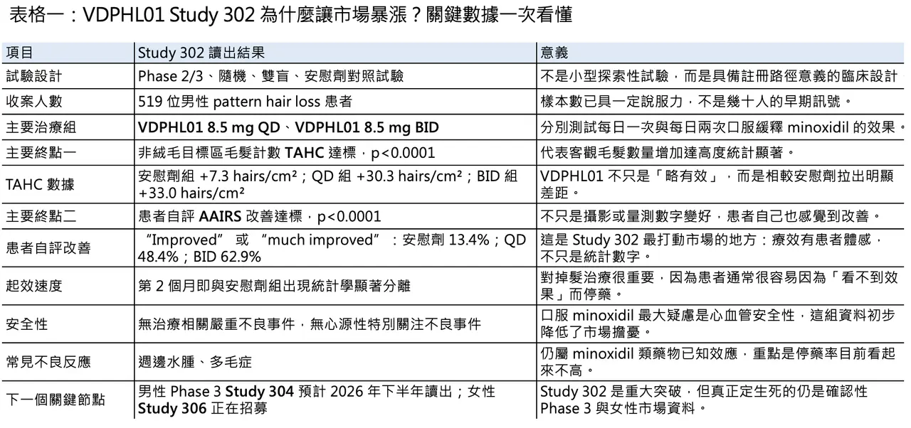
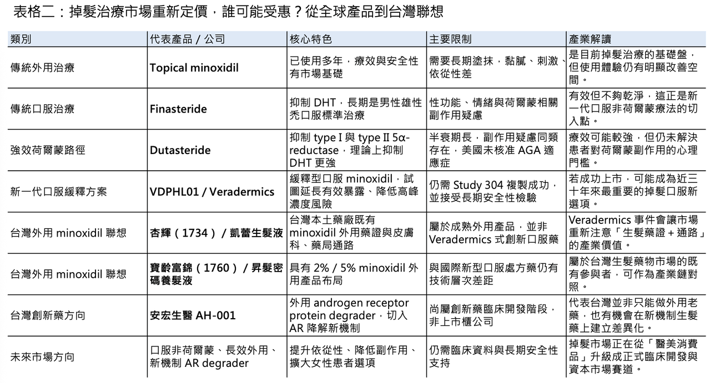

最強生髮藥暴漲 47%：Veradermics 為什麼可能改寫掉髮治療三十年僵局？
- 4 月 27 日，美國皮膚科新藥公司 Veradermics（NYSE: MANE）因為一組掉髮臨床數據，股價單日大漲近 48%。這家公司主打的不是癌症、不是自體免疫，也不是 GLP-1，而是一個長期被醫藥市場低估、卻有巨大真實需求的領域：雄性禿與女性型落髮。觸發這波行情的，是其核心產品 VDPHL01 在男性 pattern hair loss 的 Phase 2/3 Study 302 中讀出正向結果。
VDPHL01 本質上是一款 extended-release oral minoxidil tablet，也就是緩釋型口服 minoxidil。它不是全新靶點，而是把一個已經被皮膚科醫師熟悉幾十年的老成分，用新的藥物釋放設計重新包裝成真正為掉髮而生的口服製劑。這件事的意義很大，因為過去口服 minoxidil 雖然在臨床實務中常被 off-label 使用，但原始口服版本其實是從心血管用藥借來的，並不是為長期治療掉髮而設計。Veradermics 這次做的，是把「醫師經驗用藥」變成一個有劑型邏輯、有臨床終點、有 FDA 路徑的正式藥物開發案。
01｜掉髮市場一直很大，只是長期沒有真正的新答案
💇 掉髮是一個很特別的市場。它不是危及生命的疾病，卻高度影響自信、社交、情緒與生活品質。Veradermics 自己引用的市場資料顯示，美國約有 8,000 萬 pattern hair loss 患者，其中約 5,000 萬男性與 3,000 萬女性。公司也提到，pattern hair loss 是全球最大的 aesthetics market 之一，預估到 2028 年可達約 300 億美元。
但這個大市場過去三十年幾乎被兩種老藥撐住：外用 minoxidil 與口服 finasteride。Topical minoxidil 早在 1988 年就獲 FDA 核准用於 androgenetic alopecia；finasteride 則在 1997 年以 Propecia 品牌核准用於男性雄性禿。換句話說，這是一個需求巨大、使用者焦慮高度真實，但藥物創新幾乎停滯三十年的市場。
Finasteride 的邏輯是抑制 type II 5α-reductase，降低 dihydrotestosterone（DHT），從而減緩毛囊微小化。它有效，也長期是男性雄性禿口服治療的事實標準；但它的問題同樣明確：性功能副作用、情緒與精神風險爭議、女性使用限制，以及患者心理上的接受度。FDA 在 2025 年也曾特別提醒，市面上未經核准的 compounded topical finasteride 可能有嚴重風險；而歐洲 EMA 早在 2024 年即啟動對 finasteride / dutasteride 類抗掉髮藥物與 suicidal thoughts 風險的檢視。
Dutasteride 是另一個更強的 5α-reductase inhibitor，能同時抑制 type I 與 type II 5α-reductase，在日本與韓國等市場已被用於 androgenetic alopecia，但在美國並未核准這個適應症。它療效可能較強，但同樣屬於荷爾蒙路徑，仍繞不開性功能、情緒、長半衰期與停藥後風險管理等問題。
所以，真正的未滿足需求不是「完全沒有藥」，而是現有藥物都讓患者必須妥協：外用 minoxidil 需要長期每日塗抹，黏膩、刺激、依從性差；口服 finasteride 有荷爾蒙副作用疑慮；off-label 口服 minoxidil 又長期卡在心血管安全性的陰影裡。這就是為什麼 VDPHL01 的 Study 302 會讓市場如此興奮：它不是又多一個小修小補，而是可能把掉髮治療從「將就」推向「真正可長期使用的口服慢病藥」。
02｜VDPHL01 真正厲害的地方，是把 minoxidil 的老問題重新工程化
🧪 Minoxidil 的故事很有意思。它原本是血管擴張藥，後來因為毛髮增生副作用被開發成外用生髮藥。它的有效性早已被市場和醫學界接受，但口服版本一直有一個硬傷：高峰血中濃度可能帶來心血管風險，例如心悸、血壓變化、水腫等。因此，皮膚科雖然常用低劑量口服 minoxidil，但一直缺乏一個真正專為掉髮設計、具有正式臨床開發路徑的口服產品。
VDPHL01 的核心價值，就是用緩釋設計來改變這個風險收益比。Veradermics 的說法是，這個 proprietary extended-release formulation 採用 gel matrix，目標是延長 minoxidil 的穩定釋放時間，避免 immediate-release oral minoxidil 造成的高峰濃度，同時讓血中暴露更長時間維持在有利於毛髮生長的區間。白話說，它不是重新發明 minoxidil，而是重新設計 minoxidil 應該如何進入身體。
這類藥物開發最有價值的地方，在於它不是從零開始驗證一個完全陌生的新機制，而是把一個已知有效但不好用的老藥，用藥物動力學與劑型工程重新打開。對投資人而言，這種模式介於傳統新藥與新劑型之間：機制風險較低，但若臨床資料足夠漂亮，商業價值可以非常大。這也是為什麼 Study 302 的結果一出來，市場立刻用「best-in-indication」的眼光重新評價 Veradermics。

03｜Study 302：真正打動市場的，不只是 p 值，而是「患者有感」
📊 Study 302 是一項隨機、雙盲、安慰劑對照 Phase 2/3 試驗，共納入 519 位輕中度男性 pattern hair loss 患者，分為 VDPHL01 8.5 mg once daily（QD）、VDPHL01 8.5 mg twice daily（BID）與安慰劑組。試驗在第 6 個月評估共同主要終點，包括非絨毛目標區毛髮計數 non-vellus Target Area Hair Count（TAHC），以及患者自評 Androgenetic Alopecia Impact Rating Scale（AAIRS）上達到 “improved” 或 “much improved” 的比例。
數據非常漂亮。第 6 個月時，安慰劑組 non-vellus TAHC 平均增加 7.3 hairs/cm²；VDPHL01 QD 組增加 30.3 hairs/cm²，BID 組增加 33.0 hairs/cm²，兩組相較安慰劑皆達 p<0.0001。更重要的是，這不是只有毛髮計數變好而已，患者自己也感覺得到。AAIRS 上任何程度改善的患者比例為 QD 79.3%、BID 86.0%，安慰劑組為 35.6%；若看 “improved” 或 “much improved”，QD 為 48.4%、BID 為 62.9%，安慰劑只有 13.4%。
這裡有一個很重要的臨床解讀。掉髮治療不能只看 TAHC，因為 TAHC 是一個局部量測指標，代表的是特定面積內非絨毛數量增加，不一定完全等同於患者在鏡子前看到的整體改善。因此 Study 302 把患者自報結果也列為共同主要終點，反而是設計上的加分。這代表 Veradermics 不只在追求統計學勝利，而是試圖證明「患者真的覺得頭髮變好了」。在 aesthetics dermatology 裡，這一點很關鍵。
第二個亮點是起效速度。公司指出，VDPHL01 在第 2 個月這個最早測量時間點，就已在 TAHC 與 investigator global assessment 上與安慰劑出現統計學顯著分離。對一個過去常被認為要 4 到 12 個月才看得到明顯效果的領域來說，這種早期分離很有商業價值：它會影響患者續用意願，也會影響醫師處方信心。
安全性同樣是這組數據的核心。Study 302 中，整體 treatment-emergent adverse event（TEAE）發生率與安慰劑相近，沒有治療相關 serious adverse events，也沒有 cardiac origin 的 adverse events of special interest。對一個口服 minoxidil 產品而言，這句話比很多療效數字還重要。因為整個產品的商業假設，就是要在保留 minoxidil 生髮效果的同時，把口服版本最令人擔心的心血管風險壓下去。
當然，這還不是終局。Study 302 是重要讀出，但 Veradermics 還需要第二個男性 Phase 3 Study 304，公司表示 Study 304 已完成收案，topline results 預計在 2026 年下半年公布；女性 pattern hair loss 的 Phase 2/3 Study 306 也正在招募。若 Study 304 能重現 Study 302 的結果，VDPHL01 才會真正具備送件與商業化的完整說服力。
04｜為什麼市場願意給這麼高估值？因為這不是小眾病，而是現金支付的大眾慢病
💰 Veradermics 今年 2 月 IPO 時已經非常吸睛。公司以每股 17 美元發行約 1,508 萬股，募得約 2.563 億美元，並在紐約證交所掛牌，股票代號 MANE。對一家尚無營收、核心資產仍在臨床階段的公司來說，這個 IPO 表現本來就說明市場對掉髮藥物的想像力不小。
Study 302 成功後，公司隨即啟動新的公開發行，規劃發行 3.35 million shares 與 pre-funded warrants。這種節奏很典型：臨床數據把估值打上去，公司馬上利用高位補充資金，延長 runway，準備後續 Study 304、Study 306、NDA 與商業化。這不是單純融資，而是 biotech 最標準的資本市場操作：用數據換時間，用時間換註冊與商業化選項。
掉髮市場還有一個特殊之處：它高度 cash-pay。很多患者願意自費，且治療一旦有效，可能長期使用。這點和 GLP-1 有某種相似性：不是病人數少、價格極高的罕病模型，而是病人數巨大、依從性與體驗決定放量曲線的大眾慢病／醫美交界市場。若 VDPHL01 最終核准，真正的商業問題不只是「能賣多少」，而是它能不能把目前大量外用 minoxidil、off-label oral minoxidil、finasteride 使用者，以及對現有治療不滿意的空白患者，重新拉進一個正式處方市場。
對女性患者來說，機會可能更大。美國約有 3,000 萬女性 pattern hair loss 患者，但目前缺乏 FDA 核准的口服非荷爾蒙治療選項。VDPHL01 若在女性 Study 306 中成功，市場天花板會進一步往上打開。這也是為什麼 Veradermics 一開始就把 VDPHL01 定位成男女 pattern hair loss 皆可開發的 non-hormonal oral therapy，而不是只做男性雄性禿。
05｜亞洲與台灣市場的聯想：不是只有 Veradermics，外用與新機制也會被重新定價
🌏 Veradermics 的故事發生在美國，但對亞洲市場其實很有參考價值。亞洲男性雄性禿與女性型落髮的治療需求同樣真實，只是過去市場多半由外用 minoxidil、口服 finasteride / dutasteride、植髮與診所型自費服務共同承接。VDPHL01 的資料會提醒整個產業：掉髮不是一個沒有創新的傳統 OTC 市場，而是一個可以被正式臨床開發、被資本市場重新定價的慢病／醫美大市場。
放回台灣，最直接能聯想到的上市櫃公司，不是那些只做保健品或洗髮精概念的公司，而是手上本來就有 minoxidil 外用藥證與皮膚科／藥局通路的藥廠。
第一個可以看的是 杏輝（1734）。杏輝官網列有 Ketoshine Topical Solution 50mg/ml（凱蕾生髮液 50 毫克／毫升），成分為 minoxidil 50mg/ml，適應症為 androgenetic alopecia，屬於台灣本土藥廠在外用 minoxidil 市場的代表品項之一。VDPHL01 的意義不在於會直接替杏輝帶來同樣成長，而是會讓市場重新注意「生髮藥不是單純消費品，而是有正式藥證、有慢病續用、有醫師藥師通路價值」這件事。
第二個可以看的是 寶齡富錦（1760）。寶齡富錦旗下亦有 Minoxidil Solution 2% 與 Minoxidil Solution 5% 相關產品，例如「昇髮密碼養髮液 5%」，主成分為 minoxidil 50mg，適用對象為 androgenetic alopecia。這類產品的商業價值，短期當然無法和 Veradermics 的處方新藥故事相比，但它反映的是同一個大方向：生髮治療在台灣不是空白市場，而是已經存在藥局、醫美診所與皮膚科通路，只是過去缺少一個能讓資本市場重新定價的全球事件。
此外，台灣還有一個更創新藥方向的非上市案例值得放在旁邊觀察：安宏生醫（AnHorn Medicines）。其 AH-001 是外用小分子 androgen receptor（AR）protein degrader，已在美國完成 Phase 1，官方資料稱各劑量組安全性與耐受性良好，且無 drug-related adverse events。這條路線和 VDPHL01 完全不同：VDPHL01 是把 minoxidil 做成更適合長期口服的緩釋製劑，AH-001 則是從 AR 降解切入雄性禿病理。若未來 AH-001 能走到 Phase 2 並做出有效性訊號，台灣在生髮創新藥領域也不只是代工或外用老藥，而可能有自己的機制型資產。
所以，台股的聯想應該要很克制地看：杏輝、寶齡富錦這類公司是現有外用 minoxidil 藥證與通路聯想；安宏生醫則是台灣創新藥技術聯想，但尚非上市櫃標的。這些都不是對股價的直接判斷，而是產業鏈位置的對照。真正的重點是，Veradermics 讓市場重新意識到，掉髮治療可以從低關注度的外用藥與醫美消費，升級成一個有臨床、註冊、專利、現金支付與長期用藥邏輯的正式生醫賽道。

結語｜三十年沒有新答案，現在終於有人把老藥做成新故事
✨ 在 Study 302 之前，掉髮治療的敘事長期是妥協的故事：男性在 finasteride 的荷爾蒙副作用陰影下使用；女性多半依賴外用 minoxidil；醫師則在 off-label 低劑量口服 minoxidil 的經驗與心血管安全性之間小心拿捏。這個領域不缺需求，缺的是一個能同時說服醫師、患者、監管與資本市場的產品。
VDPHL01 這次交出的結果，至少讓這個答案開始成形：第 6 個月增加 30.3–33.0 hairs/cm²，患者自評改善比例明顯高於安慰劑，第 2 個月已出現分離，且目前沒有治療相關嚴重不良事件或 cardiac-origin AESIs。放在近三十年幾乎沒有 FDA 核准口服新選項的背景下，這組數據已經足夠讓市場停下來重看整個掉髮治療市場。
當然，革命還沒有完成。Study 304 必須複製成功，女性 Study 306 必須證明更大天花板，FDA 對口服 minoxidil 長期安全性的要求也不會低。但這次 Veradermics 至少已經證明一件事：掉髮市場不是只能靠老藥、外用液、植髮和焦慮行銷撐住。當一個高盛行率、高情緒價值、高自費意願的市場遇到真正站得住的臨床數據，它也可以變成資本市場願意追逐的 biotech 主線。
三十年沒有新口服選項，不代表這個市場不重要。
它只是一直在等一個能把老藥重新做對的人。
參考資料：
[0]:公開資料＆各公司官網
[1]:
Veradermics, An IPO Stock, Skyrockets On Oral Rogaine Results | Investor's Business Daily
Veradermics' oral version of Rogaine led to "rapid and robust hair growth" for men with pattern hair loss. The recent IPO stock surged.
www.investors.com
[2]:
Veradermics’ Oral VDPHL01 Achieved Early, Consistent, and Robust Hair Growth in Positive Phase 2/3 ‘302’ Clinical Trial in Male Pattern Hair Loss
Veradermics, Incorporated (NYSE: MANE), a dermatologist-founded, late-stage biopharmaceutical company focused on developing innovative therapeutics for patte...
www.businesswire.com
"Veradermics’ Oral VDPHL01 Achieved Early, Consistent, and Robust Hair Growth in Positive Phase 2/3 ‘302’ Clinical Trial in Male Pattern Hair Loss"
[3]:
www.accessdata.fda.gov
https://www.accessdata.fda.gov/drugsatfda_docs/nda/97/20834_ROGAINE%20EXTRA%20STRENGTH%20FOR%20MEN%205%25_BIOPHARMR.PDF
www.accessdata.fda.gov
[4]:
FDA alerts health care providers, compounders and consumers of potential risks associated with compounded topical finasteride products | FDA
FDA has become aware of reports of adverse events involving compounded topical finasteride products potentially putting consumers at risk.
www.fda.gov
[5]:
Document
https://www.sec.gov/Archives/edgar/data/1827635/000162828026027354/exhibit991-8xk.htm
www.sec.gov
"Document"